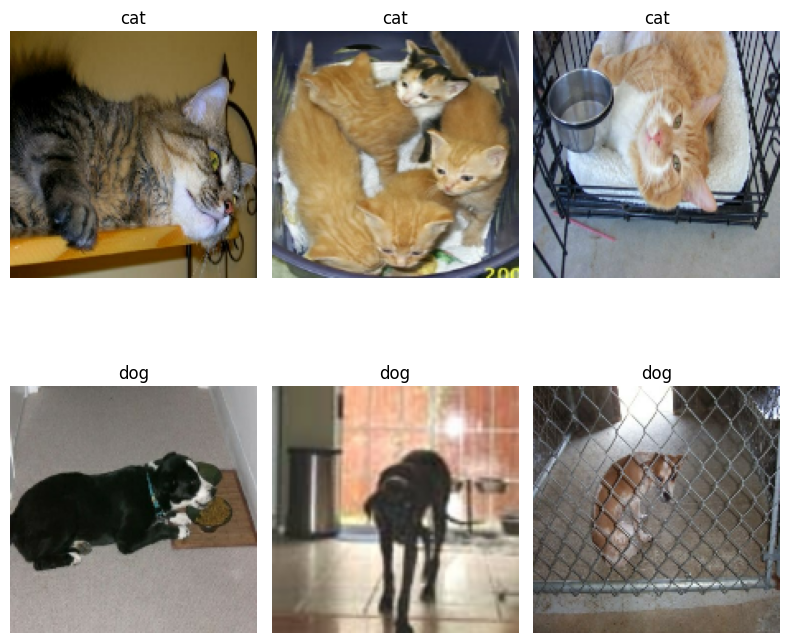
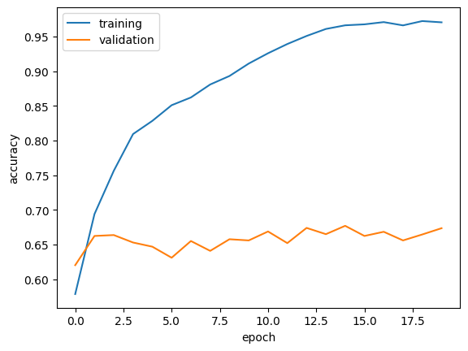
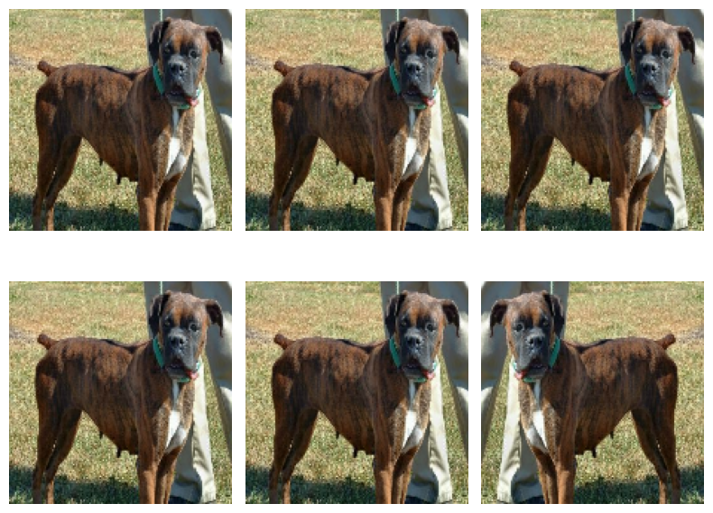
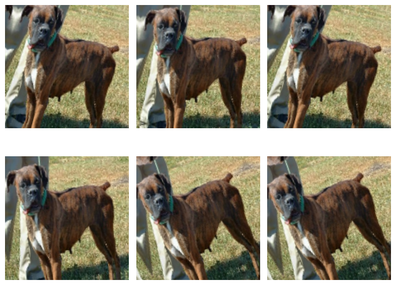
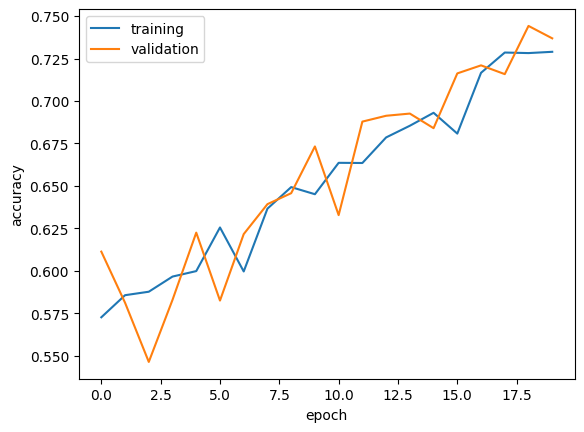
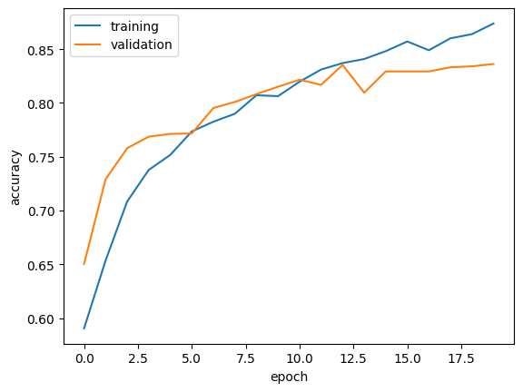
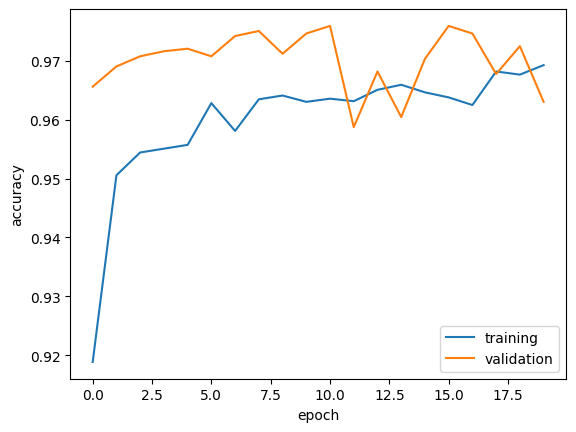

import os
os.environ["KERAS_BACKEND"] = "jax"
from keras import utils, datasets, models, layers
import tensorflow_datasets as tfds
import keras
from matplotlib import pyplot as plt
import numpy as npGetting Started
This tutorial is based on this keras tutorial: keras Transfer Learning Guide.
We’ll be creating a machine learning model using keras to classify images of cats and dogs.
First, import the necessary packages. You should also change your runtime to the GPU to speed it up.
Next, import the data.
train_ds, validation_ds, test_ds = tfds.load(
"cats_vs_dogs",
# 40% for training, 10% for validation, and 10% for test (the rest unused)
split=["train[:40%]", "train[40%:50%]", "train[50%:60%]"],
as_supervised=True, # Include labels
)
print(f"Number of training samples: {train_ds.cardinality()}")
print(f"Number of validation samples: {validation_ds.cardinality()}")
print(f"Number of test samples: {test_ds.cardinality()}")Downloading and preparing dataset 786.67 MiB (download: 786.67 MiB, generated: 1.04 GiB, total: 1.81 GiB) to /root/tensorflow_datasets/cats_vs_dogs/4.0.1...WARNING:absl:1738 images were corrupted and were skippedDataset cats_vs_dogs downloaded and prepared to /root/tensorflow_datasets/cats_vs_dogs/4.0.1. Subsequent calls will reuse this data.
Number of training samples: 9305
Number of validation samples: 2326
Number of test samples: 2326Next, we’ll resize the data so that all pictures are the same size. We’ll also split into train, validation, and test datasets.
resize_fn = keras.layers.Resizing(150, 150)
train_ds = train_ds.map(lambda x, y: (resize_fn(x), y))
validation_ds = validation_ds.map(lambda x, y: (resize_fn(x), y))
test_ds = test_ds.map(lambda x, y: (resize_fn(x), y))This next cell establishes an appropriate batch size so that the model loads data in a more efficient way.
from tensorflow import data as tf_data
batch_size = 64
train_ds = train_ds.batch(batch_size).prefetch(tf_data.AUTOTUNE).cache()
validation_ds = validation_ds.batch(batch_size).prefetch(tf_data.AUTOTUNE).cache()
test_ds = test_ds.batch(batch_size).prefetch(tf_data.AUTOTUNE).cache()Let’s take a look at some of the data. The function show_sample() will display three pictures of cats and three pictures of dogs from our dataset.
def show_sample():
for images, labels in train_ds.take(1):
plt.figure(figsize=(8,8))
cats = [images[i] for i in range(64) if int(labels[i])==0]
dogs = [images[i] for i in range(64) if int(labels[i])==1]
for i in range(6):
if i<3:
ax = plt.subplot(2, 3, i + 1)
plt.imshow(np.array(cats[i]).astype("int32"))
plt.title('cat')
plt.axis("off")
else:
ax = plt.subplot(2, 3, 1+i)
plt.imshow(np.array(dogs[i]).astype("int32"))
plt.title('dog')
plt.axis("off")
plt.tight_layout()show_sample()
Modeling
Baseline
The baseline model is the simplest one: the one that always guesses the mode, or most common result. What would this be for our dataset and how accurate would it be? We’ll compare our later models to the baseline – they should all perform better than the baseline. The next cell creates a numpy iterator over the dataset so that we can access data points.
labels_iterator= train_ds.unbatch().map(lambda image, label: label).as_numpy_iterator()l = list(labels_iterator)
print(l.count(0), l.count(1))4637 4668It looks like our dataset contains 4637 images of cats and 4668 images of dogs, so the baseline model would guess ‘dog’ every time and it would be correct only slightly more than half of the time.
Model 1
This is our first model using keras. We’ll use the models.Sequential() method to build it using the provided layers from keras. This model is a basic first guess – I chose the layers somewhat arbitrarily.
model1 = models.Sequential([
layers.Input((150, 150, 3)),
layers.Conv2D(64, (3, 3), activation='relu'),
layers.MaxPooling2D((2, 2)),
layers.Conv2D(32, (3, 3), activation='relu'),
layers.Dropout(0.2),
layers.MaxPooling2D((2, 2)),
layers.Conv2D(64, (3, 3), activation='relu'),
layers.Flatten(),
layers.Dense(64, activation='relu'),
layers.Dense(64, activation='relu'),
layers.Dense(2) # number of classes
])model1.compile(optimizer='adam',
loss=keras.losses.SparseCategoricalCrossentropy(from_logits=True),
metrics=['accuracy'])
model1.summary()
history = model1.fit(train_ds,
epochs=20,
validation_data=validation_ds)Model: "sequential"
┏━━━━━━━━━━━━━━━━━━━━━━━━━━━━━━━━━━━━━━┳━━━━━━━━━━━━━━━━━━━━━━━━━━━━━┳━━━━━━━━━━━━━━━━━┓ ┃ Layer (type) ┃ Output Shape ┃ Param # ┃ ┡━━━━━━━━━━━━━━━━━━━━━━━━━━━━━━━━━━━━━━╇━━━━━━━━━━━━━━━━━━━━━━━━━━━━━╇━━━━━━━━━━━━━━━━━┩ │ conv2d (Conv2D) │ (None, 148, 148, 64) │ 1,792 │ ├──────────────────────────────────────┼─────────────────────────────┼─────────────────┤ │ max_pooling2d (MaxPooling2D) │ (None, 74, 74, 64) │ 0 │ ├──────────────────────────────────────┼─────────────────────────────┼─────────────────┤ │ conv2d_1 (Conv2D) │ (None, 72, 72, 32) │ 18,464 │ ├──────────────────────────────────────┼─────────────────────────────┼─────────────────┤ │ dropout (Dropout) │ (None, 72, 72, 32) │ 0 │ ├──────────────────────────────────────┼─────────────────────────────┼─────────────────┤ │ max_pooling2d_1 (MaxPooling2D) │ (None, 36, 36, 32) │ 0 │ ├──────────────────────────────────────┼─────────────────────────────┼─────────────────┤ │ conv2d_2 (Conv2D) │ (None, 34, 34, 64) │ 18,496 │ ├──────────────────────────────────────┼─────────────────────────────┼─────────────────┤ │ flatten (Flatten) │ (None, 73984) │ 0 │ ├──────────────────────────────────────┼─────────────────────────────┼─────────────────┤ │ dense (Dense) │ (None, 64) │ 4,735,040 │ ├──────────────────────────────────────┼─────────────────────────────┼─────────────────┤ │ dense_1 (Dense) │ (None, 64) │ 4,160 │ ├──────────────────────────────────────┼─────────────────────────────┼─────────────────┤ │ dense_2 (Dense) │ (None, 2) │ 130 │ └──────────────────────────────────────┴─────────────────────────────┴─────────────────┘
Total params: 4,778,082 (18.23 MB)
Trainable params: 4,778,082 (18.23 MB)
Non-trainable params: 0 (0.00 B)
Epoch 1/20
146/146 ━━━━━━━━━━━━━━━━━━━━ 21s 105ms/step - accuracy: 0.5481 - loss: 23.7374 - val_accuracy: 0.6204 - val_loss: 0.6368
Epoch 2/20
146/146 ━━━━━━━━━━━━━━━━━━━━ 7s 40ms/step - accuracy: 0.6801 - loss: 0.5981 - val_accuracy: 0.6625 - val_loss: 0.6177
Epoch 3/20
146/146 ━━━━━━━━━━━━━━━━━━━━ 6s 41ms/step - accuracy: 0.7433 - loss: 0.5167 - val_accuracy: 0.6638 - val_loss: 0.6138
Epoch 4/20
146/146 ━━━━━━━━━━━━━━━━━━━━ 6s 40ms/step - accuracy: 0.8037 - loss: 0.4210 - val_accuracy: 0.6531 - val_loss: 0.6810
Epoch 5/20
146/146 ━━━━━━━━━━━━━━━━━━━━ 6s 40ms/step - accuracy: 0.8310 - loss: 0.3811 - val_accuracy: 0.6470 - val_loss: 0.7438
Epoch 6/20
146/146 ━━━━━━━━━━━━━━━━━━━━ 6s 40ms/step - accuracy: 0.8543 - loss: 0.3336 - val_accuracy: 0.6311 - val_loss: 0.8283
Epoch 7/20
146/146 ━━━━━━━━━━━━━━━━━━━━ 6s 39ms/step - accuracy: 0.8616 - loss: 0.3105 - val_accuracy: 0.6552 - val_loss: 0.7941
Epoch 8/20
146/146 ━━━━━━━━━━━━━━━━━━━━ 6s 39ms/step - accuracy: 0.8863 - loss: 0.2815 - val_accuracy: 0.6410 - val_loss: 0.8483
Epoch 9/20
146/146 ━━━━━━━━━━━━━━━━━━━━ 6s 39ms/step - accuracy: 0.8943 - loss: 0.2609 - val_accuracy: 0.6578 - val_loss: 0.9370
Epoch 10/20
146/146 ━━━━━━━━━━━━━━━━━━━━ 6s 39ms/step - accuracy: 0.9095 - loss: 0.2254 - val_accuracy: 0.6561 - val_loss: 1.1442
Epoch 11/20
146/146 ━━━━━━━━━━━━━━━━━━━━ 6s 39ms/step - accuracy: 0.9195 - loss: 0.2113 - val_accuracy: 0.6690 - val_loss: 1.1469
Epoch 12/20
146/146 ━━━━━━━━━━━━━━━━━━━━ 6s 39ms/step - accuracy: 0.9364 - loss: 0.1691 - val_accuracy: 0.6522 - val_loss: 1.2807
Epoch 13/20
146/146 ━━━━━━━━━━━━━━━━━━━━ 6s 39ms/step - accuracy: 0.9493 - loss: 0.1427 - val_accuracy: 0.6741 - val_loss: 1.3055
Epoch 14/20
146/146 ━━━━━━━━━━━━━━━━━━━━ 6s 41ms/step - accuracy: 0.9575 - loss: 0.1167 - val_accuracy: 0.6651 - val_loss: 1.6661
Epoch 15/20
146/146 ━━━━━━━━━━━━━━━━━━━━ 6s 39ms/step - accuracy: 0.9608 - loss: 0.1077 - val_accuracy: 0.6771 - val_loss: 1.7228
Epoch 16/20
146/146 ━━━━━━━━━━━━━━━━━━━━ 6s 42ms/step - accuracy: 0.9662 - loss: 0.0915 - val_accuracy: 0.6625 - val_loss: 1.7281
Epoch 17/20
146/146 ━━━━━━━━━━━━━━━━━━━━ 6s 40ms/step - accuracy: 0.9713 - loss: 0.0945 - val_accuracy: 0.6685 - val_loss: 1.5922
Epoch 18/20
146/146 ━━━━━━━━━━━━━━━━━━━━ 6s 40ms/step - accuracy: 0.9620 - loss: 0.1135 - val_accuracy: 0.6561 - val_loss: 1.3940
Epoch 19/20
146/146 ━━━━━━━━━━━━━━━━━━━━ 6s 40ms/step - accuracy: 0.9684 - loss: 0.0931 - val_accuracy: 0.6647 - val_loss: 1.6428
Epoch 20/20
146/146 ━━━━━━━━━━━━━━━━━━━━ 6s 41ms/step - accuracy: 0.9719 - loss: 0.0904 - val_accuracy: 0.6737 - val_loss: 1.8710Now that we’ve compiled Model 1, we can take a look at the summary and accuracy. The summary tells us what each layer is doing – take a look at each layer’s inputs and outputs.
Let’s write a quick function to visualize how the accuracy changes throughout the training process, which is 20 epochs.
def history_visualization(history):
plt.plot(history.history["accuracy"], label = "training")
plt.plot(history.history["val_accuracy"], label = "validation")
plt.gca().set(xlabel = "epoch", ylabel = "accuracy")
plt.legend()history_visualization(history)
The accuracy of Model 1 stabilized around 60%-65% during training. This is better than the baseline, but the model is not as accurate as we would like on the validation data, and it looks like there’s been some issues with overfitting. We’ll work on that in the next models.
Model 2
In this model, we’ll add in some image aumentation to reduce overfitting. This entails adding in the RandomFlip and RandomRotation layers provided by keras. The following function will be used to visualize what these layers do to a sample image.
def augmentation_visualization(image, f):
plt.figure(figsize=(8,8), tight_layout=True)
for i in range(6):
ax = plt.subplot(2, 3, i + 1)
augmented_image = f(np.expand_dims(image, 0))
plt.imshow(np.array(augmented_image[0]).astype("int32"))
plt.axis("off")for images, labels in train_ds.take(1):
image = images[0]
augmentation_visualization(image, layers.RandomFlip("horizontal"))
break
augmentation_visualization(image, layers.RandomRotation(0.1))
Adding the data augmentation layers to the beginning of Model 1 gives us Model 2:
model2 = models.Sequential([
layers.Input((150, 150, 3)),
layers.RandomFlip("horizontal"),
layers.RandomRotation(0.1),
layers.Conv2D(64, (3, 3), activation='relu'),
layers.MaxPooling2D((2, 2)),
layers.Conv2D(64, (3, 3), activation='relu'),
layers.Dropout(0.2),
layers.MaxPooling2D((2, 2)),
layers.Conv2D(64, (3, 3), activation='relu'),
layers.Flatten(),
layers.Dense(64, activation='relu'),
layers.Dense(64, activation='relu'),
layers.Dense(2) # number of classes
])model2.compile(optimizer='adam',
loss=keras.losses.SparseCategoricalCrossentropy(from_logits=True),
metrics=['accuracy'])
model2.summary()
history = model2.fit(train_ds,
epochs=20,
validation_data=validation_ds)Model: "sequential_1"
┏━━━━━━━━━━━━━━━━━━━━━━━━━━━━━━━━━━━━━━┳━━━━━━━━━━━━━━━━━━━━━━━━━━━━━┳━━━━━━━━━━━━━━━━━┓ ┃ Layer (type) ┃ Output Shape ┃ Param # ┃ ┡━━━━━━━━━━━━━━━━━━━━━━━━━━━━━━━━━━━━━━╇━━━━━━━━━━━━━━━━━━━━━━━━━━━━━╇━━━━━━━━━━━━━━━━━┩ │ random_flip_1 (RandomFlip) │ (None, 150, 150, 3) │ 0 │ ├──────────────────────────────────────┼─────────────────────────────┼─────────────────┤ │ random_rotation_1 (RandomRotation) │ (None, 150, 150, 3) │ 0 │ ├──────────────────────────────────────┼─────────────────────────────┼─────────────────┤ │ conv2d_3 (Conv2D) │ (None, 148, 148, 64) │ 1,792 │ ├──────────────────────────────────────┼─────────────────────────────┼─────────────────┤ │ max_pooling2d_2 (MaxPooling2D) │ (None, 74, 74, 64) │ 0 │ ├──────────────────────────────────────┼─────────────────────────────┼─────────────────┤ │ conv2d_4 (Conv2D) │ (None, 72, 72, 64) │ 36,928 │ ├──────────────────────────────────────┼─────────────────────────────┼─────────────────┤ │ dropout_1 (Dropout) │ (None, 72, 72, 64) │ 0 │ ├──────────────────────────────────────┼─────────────────────────────┼─────────────────┤ │ max_pooling2d_3 (MaxPooling2D) │ (None, 36, 36, 64) │ 0 │ ├──────────────────────────────────────┼─────────────────────────────┼─────────────────┤ │ conv2d_5 (Conv2D) │ (None, 34, 34, 64) │ 36,928 │ ├──────────────────────────────────────┼─────────────────────────────┼─────────────────┤ │ flatten_1 (Flatten) │ (None, 73984) │ 0 │ ├──────────────────────────────────────┼─────────────────────────────┼─────────────────┤ │ dense_3 (Dense) │ (None, 64) │ 4,735,040 │ ├──────────────────────────────────────┼─────────────────────────────┼─────────────────┤ │ dense_4 (Dense) │ (None, 64) │ 4,160 │ ├──────────────────────────────────────┼─────────────────────────────┼─────────────────┤ │ dense_5 (Dense) │ (None, 2) │ 130 │ └──────────────────────────────────────┴─────────────────────────────┴─────────────────┘
Total params: 4,814,978 (18.37 MB)
Trainable params: 4,814,978 (18.37 MB)
Non-trainable params: 0 (0.00 B)
Epoch 1/20
146/146 ━━━━━━━━━━━━━━━━━━━━ 50s 277ms/step - accuracy: 0.5527 - loss: 31.6835 - val_accuracy: 0.6113 - val_loss: 0.6594
Epoch 2/20
146/146 ━━━━━━━━━━━━━━━━━━━━ 43s 292ms/step - accuracy: 0.5834 - loss: 0.6705 - val_accuracy: 0.5813 - val_loss: 0.6716
Epoch 3/20
146/146 ━━━━━━━━━━━━━━━━━━━━ 30s 208ms/step - accuracy: 0.5749 - loss: 0.6738 - val_accuracy: 0.5464 - val_loss: 0.6869
Epoch 4/20
146/146 ━━━━━━━━━━━━━━━━━━━━ 43s 292ms/step - accuracy: 0.5880 - loss: 0.6666 - val_accuracy: 0.5830 - val_loss: 0.6726
Epoch 5/20
146/146 ━━━━━━━━━━━━━━━━━━━━ 42s 291ms/step - accuracy: 0.5882 - loss: 0.6687 - val_accuracy: 0.6225 - val_loss: 0.6462
Epoch 6/20
146/146 ━━━━━━━━━━━━━━━━━━━━ 42s 291ms/step - accuracy: 0.6152 - loss: 0.6515 - val_accuracy: 0.5825 - val_loss: 0.6671
Epoch 7/20
146/146 ━━━━━━━━━━━━━━━━━━━━ 44s 300ms/step - accuracy: 0.5795 - loss: 0.6696 - val_accuracy: 0.6217 - val_loss: 0.6440
Epoch 8/20
146/146 ━━━━━━━━━━━━━━━━━━━━ 30s 205ms/step - accuracy: 0.6365 - loss: 0.6390 - val_accuracy: 0.6393 - val_loss: 0.6420
Epoch 9/20
146/146 ━━━━━━━━━━━━━━━━━━━━ 42s 291ms/step - accuracy: 0.6560 - loss: 0.6281 - val_accuracy: 0.6457 - val_loss: 0.6393
Epoch 10/20
146/146 ━━━━━━━━━━━━━━━━━━━━ 42s 291ms/step - accuracy: 0.6444 - loss: 0.6322 - val_accuracy: 0.6733 - val_loss: 0.6156
Epoch 11/20
146/146 ━━━━━━━━━━━━━━━━━━━━ 42s 291ms/step - accuracy: 0.6641 - loss: 0.6168 - val_accuracy: 0.6328 - val_loss: 0.6391
Epoch 12/20
146/146 ━━━━━━━━━━━━━━━━━━━━ 44s 300ms/step - accuracy: 0.6554 - loss: 0.6209 - val_accuracy: 0.6879 - val_loss: 0.6011
Epoch 13/20
146/146 ━━━━━━━━━━━━━━━━━━━━ 44s 300ms/step - accuracy: 0.6718 - loss: 0.5969 - val_accuracy: 0.6913 - val_loss: 0.5935
Epoch 14/20
146/146 ━━━━━━━━━━━━━━━━━━━━ 42s 291ms/step - accuracy: 0.6849 - loss: 0.5892 - val_accuracy: 0.6926 - val_loss: 0.5927
Epoch 15/20
146/146 ━━━━━━━━━━━━━━━━━━━━ 31s 215ms/step - accuracy: 0.6981 - loss: 0.5759 - val_accuracy: 0.6840 - val_loss: 0.5965
Epoch 16/20
146/146 ━━━━━━━━━━━━━━━━━━━━ 42s 291ms/step - accuracy: 0.6773 - loss: 0.6005 - val_accuracy: 0.7163 - val_loss: 0.5726
Epoch 17/20
146/146 ━━━━━━━━━━━━━━━━━━━━ 42s 291ms/step - accuracy: 0.7141 - loss: 0.5598 - val_accuracy: 0.7210 - val_loss: 0.5612
Epoch 18/20
146/146 ━━━━━━━━━━━━━━━━━━━━ 30s 207ms/step - accuracy: 0.7277 - loss: 0.5495 - val_accuracy: 0.7158 - val_loss: 0.5694
Epoch 19/20
146/146 ━━━━━━━━━━━━━━━━━━━━ 42s 291ms/step - accuracy: 0.7293 - loss: 0.5407 - val_accuracy: 0.7442 - val_loss: 0.5290
Epoch 20/20
146/146 ━━━━━━━━━━━━━━━━━━━━ 31s 215ms/step - accuracy: 0.7349 - loss: 0.5406 - val_accuracy: 0.7369 - val_loss: 0.5304history_visualization(history)
Model 2 stabilized around 70%-75%. This is better than Model 1, and it seems to have improved on the overfitting issue.
Model 3
Let’s make things a bit easier for the model by preprocessing the data. We will create a preprocessor layer which will normalize the data so that the model will be able to focus on legitimate signal in the data rather than adjusting the weights to the data scale.
i = keras.Input(shape=(150, 150, 3))
# The pixel values have the range of (0, 255), but many models will work better if rescaled to (-1, 1.)
# outputs: `(inputs * scale) + offset`
scale_layer = keras.layers.Rescaling(scale=1 / 127.5, offset=-1)
x = scale_layer(i)
preprocessor = keras.Model(inputs = i, outputs = x)model3 is identical to model2 but with the preprocessor layer added.
model3 = models.Sequential([
preprocessor,
layers.RandomFlip("horizontal"),
layers.RandomRotation(0.1),
layers.Conv2D(64, (3, 3), activation='relu'),
layers.MaxPooling2D((2, 2)),
layers.Conv2D(64, (3, 3), activation='relu'),
layers.Dropout(0.2),
layers.MaxPooling2D((2, 2)),
layers.Conv2D(64, (3, 3), activation='relu'),
layers.Flatten(),
layers.Dense(64, activation='relu'),
layers.Dense(64, activation='relu'),
layers.Dense(2) # number of classes
])model3.compile(optimizer='adam',
loss=keras.losses.SparseCategoricalCrossentropy(from_logits=True),
metrics=['accuracy'])
model3.summary()
history = model3.fit(train_ds,
epochs=20,
validation_data=validation_ds)Model: "sequential_2"
┏━━━━━━━━━━━━━━━━━━━━━━━━━━━━━━━━━━━━━━┳━━━━━━━━━━━━━━━━━━━━━━━━━━━━━┳━━━━━━━━━━━━━━━━━┓ ┃ Layer (type) ┃ Output Shape ┃ Param # ┃ ┡━━━━━━━━━━━━━━━━━━━━━━━━━━━━━━━━━━━━━━╇━━━━━━━━━━━━━━━━━━━━━━━━━━━━━╇━━━━━━━━━━━━━━━━━┩ │ functional_2 (Functional) │ (None, 150, 150, 3) │ 0 │ ├──────────────────────────────────────┼─────────────────────────────┼─────────────────┤ │ random_flip_2 (RandomFlip) │ (None, 150, 150, 3) │ 0 │ ├──────────────────────────────────────┼─────────────────────────────┼─────────────────┤ │ random_rotation_2 (RandomRotation) │ (None, 150, 150, 3) │ 0 │ ├──────────────────────────────────────┼─────────────────────────────┼─────────────────┤ │ conv2d_6 (Conv2D) │ (None, 148, 148, 64) │ 1,792 │ ├──────────────────────────────────────┼─────────────────────────────┼─────────────────┤ │ max_pooling2d_4 (MaxPooling2D) │ (None, 74, 74, 64) │ 0 │ ├──────────────────────────────────────┼─────────────────────────────┼─────────────────┤ │ conv2d_7 (Conv2D) │ (None, 72, 72, 64) │ 36,928 │ ├──────────────────────────────────────┼─────────────────────────────┼─────────────────┤ │ dropout_2 (Dropout) │ (None, 72, 72, 64) │ 0 │ ├──────────────────────────────────────┼─────────────────────────────┼─────────────────┤ │ max_pooling2d_5 (MaxPooling2D) │ (None, 36, 36, 64) │ 0 │ ├──────────────────────────────────────┼─────────────────────────────┼─────────────────┤ │ conv2d_8 (Conv2D) │ (None, 34, 34, 64) │ 36,928 │ ├──────────────────────────────────────┼─────────────────────────────┼─────────────────┤ │ flatten_2 (Flatten) │ (None, 73984) │ 0 │ ├──────────────────────────────────────┼─────────────────────────────┼─────────────────┤ │ dense_6 (Dense) │ (None, 64) │ 4,735,040 │ ├──────────────────────────────────────┼─────────────────────────────┼─────────────────┤ │ dense_7 (Dense) │ (None, 64) │ 4,160 │ ├──────────────────────────────────────┼─────────────────────────────┼─────────────────┤ │ dense_8 (Dense) │ (None, 2) │ 130 │ └──────────────────────────────────────┴─────────────────────────────┴─────────────────┘
Total params: 4,814,978 (18.37 MB)
Trainable params: 4,814,978 (18.37 MB)
Non-trainable params: 0 (0.00 B)
Epoch 1/20
146/146 ━━━━━━━━━━━━━━━━━━━━ 43s 292ms/step - accuracy: 0.5563 - loss: 0.7026 - val_accuracy: 0.6505 - val_loss: 0.6115
Epoch 2/20
146/146 ━━━━━━━━━━━━━━━━━━━━ 42s 291ms/step - accuracy: 0.6405 - loss: 0.6213 - val_accuracy: 0.7291 - val_loss: 0.5549
Epoch 3/20
146/146 ━━━━━━━━━━━━━━━━━━━━ 32s 217ms/step - accuracy: 0.6961 - loss: 0.5731 - val_accuracy: 0.7580 - val_loss: 0.4957
Epoch 4/20
146/146 ━━━━━━━━━━━━━━━━━━━━ 42s 291ms/step - accuracy: 0.7300 - loss: 0.5336 - val_accuracy: 0.7687 - val_loss: 0.4953
Epoch 5/20
146/146 ━━━━━━━━━━━━━━━━━━━━ 31s 210ms/step - accuracy: 0.7487 - loss: 0.5089 - val_accuracy: 0.7713 - val_loss: 0.4665
Epoch 6/20
146/146 ━━━━━━━━━━━━━━━━━━━━ 30s 207ms/step - accuracy: 0.7707 - loss: 0.4779 - val_accuracy: 0.7717 - val_loss: 0.4707
Epoch 7/20
146/146 ━━━━━━━━━━━━━━━━━━━━ 42s 292ms/step - accuracy: 0.7809 - loss: 0.4673 - val_accuracy: 0.7954 - val_loss: 0.4395
Epoch 8/20
146/146 ━━━━━━━━━━━━━━━━━━━━ 44s 300ms/step - accuracy: 0.7904 - loss: 0.4550 - val_accuracy: 0.8009 - val_loss: 0.4305
Epoch 9/20
146/146 ━━━━━━━━━━━━━━━━━━━━ 30s 206ms/step - accuracy: 0.7980 - loss: 0.4366 - val_accuracy: 0.8083 - val_loss: 0.4161
Epoch 10/20
146/146 ━━━━━━━━━━━━━━━━━━━━ 42s 292ms/step - accuracy: 0.8005 - loss: 0.4262 - val_accuracy: 0.8151 - val_loss: 0.4142
Epoch 11/20
146/146 ━━━━━━━━━━━━━━━━━━━━ 43s 292ms/step - accuracy: 0.8145 - loss: 0.4040 - val_accuracy: 0.8216 - val_loss: 0.4084
Epoch 12/20
146/146 ━━━━━━━━━━━━━━━━━━━━ 34s 232ms/step - accuracy: 0.8256 - loss: 0.3867 - val_accuracy: 0.8169 - val_loss: 0.4134
Epoch 13/20
146/146 ━━━━━━━━━━━━━━━━━━━━ 32s 218ms/step - accuracy: 0.8254 - loss: 0.3907 - val_accuracy: 0.8353 - val_loss: 0.3893
Epoch 14/20
146/146 ━━━━━━━━━━━━━━━━━━━━ 31s 211ms/step - accuracy: 0.8325 - loss: 0.3803 - val_accuracy: 0.8095 - val_loss: 0.4123
Epoch 15/20
146/146 ━━━━━━━━━━━━━━━━━━━━ 31s 210ms/step - accuracy: 0.8459 - loss: 0.3575 - val_accuracy: 0.8293 - val_loss: 0.3967
Epoch 16/20
146/146 ━━━━━━━━━━━━━━━━━━━━ 32s 218ms/step - accuracy: 0.8557 - loss: 0.3389 - val_accuracy: 0.8293 - val_loss: 0.3886
Epoch 17/20
146/146 ━━━━━━━━━━━━━━━━━━━━ 30s 206ms/step - accuracy: 0.8442 - loss: 0.3482 - val_accuracy: 0.8293 - val_loss: 0.3898
Epoch 18/20
146/146 ━━━━━━━━━━━━━━━━━━━━ 42s 292ms/step - accuracy: 0.8565 - loss: 0.3255 - val_accuracy: 0.8332 - val_loss: 0.3843
Epoch 19/20
146/146 ━━━━━━━━━━━━━━━━━━━━ 42s 292ms/step - accuracy: 0.8627 - loss: 0.3151 - val_accuracy: 0.8340 - val_loss: 0.3791
Epoch 20/20
146/146 ━━━━━━━━━━━━━━━━━━━━ 42s 292ms/step - accuracy: 0.8760 - loss: 0.3015 - val_accuracy: 0.8362 - val_loss: 0.3900history_visualization(history)
Model 3 stabilized around 80%-85% accuracy. This is much better than Model 1 and Model 2, and it seems like there is not much overfitting, since the training and validation scores are very close.
Model 4
For this model, we’ll build on someone else’s model that has already been made. The next block will import the model and create a layer that we can put into our model.
IMG_SHAPE = (150, 150, 3)
base_model = keras.applications.MobileNetV3Large(input_shape=IMG_SHAPE,
include_top=False,
include_preprocessing=True,
weights='imagenet')
base_model.trainable = False
i = keras.Input(shape=IMG_SHAPE)
x = base_model(i, training = False)
base_model_layer = keras.Model(inputs = i, outputs = x)/usr/local/lib/python3.11/dist-packages/keras/src/applications/mobilenet_v3.py:517: UserWarning: `input_shape` is undefined or non-square, or `rows` is not 224. Weights for input shape (224, 224) will be loaded as the default.
return MobileNetV3(Downloading data from https://storage.googleapis.com/tensorflow/keras-applications/mobilenet_v3/weights_mobilenet_v3_large_224_1.0_float_no_top_v2.h5
12683000/12683000 ━━━━━━━━━━━━━━━━━━━━ 0s 0us/stepWe’ll keep the data augmentation layers, but the preprocessing is taken care of by the include_preprocessing argument in MobileNetV3Large. Then I added one more GlobalMaxPooling2D layer, as well as the necessary final Dense layer of 2.
model4 = models.Sequential([
layers.RandomFlip("horizontal"),
layers.RandomRotation(0.1),
base_model_layer,
layers.GlobalMaxPooling2D(),
layers.Dense(2)
])model4.compile(optimizer='adam',
loss=keras.losses.SparseCategoricalCrossentropy(from_logits=True),
metrics=['accuracy'])
model4.summary()
history = model4.fit(train_ds,
epochs=20,
validation_data=validation_ds)Model: "sequential_3"
┏━━━━━━━━━━━━━━━━━━━━━━━━━━━━━━━━━━━━━━┳━━━━━━━━━━━━━━━━━━━━━━━━━━━━━┳━━━━━━━━━━━━━━━━━┓ ┃ Layer (type) ┃ Output Shape ┃ Param # ┃ ┡━━━━━━━━━━━━━━━━━━━━━━━━━━━━━━━━━━━━━━╇━━━━━━━━━━━━━━━━━━━━━━━━━━━━━╇━━━━━━━━━━━━━━━━━┩ │ random_flip_3 (RandomFlip) │ ? │ 0 (unbuilt) │ ├──────────────────────────────────────┼─────────────────────────────┼─────────────────┤ │ random_rotation_3 (RandomRotation) │ ? │ 0 (unbuilt) │ ├──────────────────────────────────────┼─────────────────────────────┼─────────────────┤ │ functional_4 (Functional) │ (None, 5, 5, 960) │ 2,996,352 │ ├──────────────────────────────────────┼─────────────────────────────┼─────────────────┤ │ global_max_pooling2d │ ? │ 0 │ │ (GlobalMaxPooling2D) │ │ │ ├──────────────────────────────────────┼─────────────────────────────┼─────────────────┤ │ dense_9 (Dense) │ ? │ 0 (unbuilt) │ └──────────────────────────────────────┴─────────────────────────────┴─────────────────┘
Total params: 2,996,352 (11.43 MB)
Trainable params: 0 (0.00 B)
Non-trainable params: 2,996,352 (11.43 MB)
Epoch 1/20
146/146 ━━━━━━━━━━━━━━━━━━━━ 80s 468ms/step - accuracy: 0.8898 - loss: 0.9460 - val_accuracy: 0.9656 - val_loss: 0.2487
Epoch 2/20
146/146 ━━━━━━━━━━━━━━━━━━━━ 50s 341ms/step - accuracy: 0.9529 - loss: 0.3499 - val_accuracy: 0.9690 - val_loss: 0.2329
Epoch 3/20
146/146 ━━━━━━━━━━━━━━━━━━━━ 90s 620ms/step - accuracy: 0.9561 - loss: 0.2840 - val_accuracy: 0.9708 - val_loss: 0.2102
Epoch 4/20
146/146 ━━━━━━━━━━━━━━━━━━━━ 50s 342ms/step - accuracy: 0.9553 - loss: 0.2975 - val_accuracy: 0.9716 - val_loss: 0.2074
Epoch 5/20
146/146 ━━━━━━━━━━━━━━━━━━━━ 52s 355ms/step - accuracy: 0.9561 - loss: 0.2675 - val_accuracy: 0.9721 - val_loss: 0.1809
Epoch 6/20
146/146 ━━━━━━━━━━━━━━━━━━━━ 50s 340ms/step - accuracy: 0.9652 - loss: 0.1849 - val_accuracy: 0.9708 - val_loss: 0.1774
Epoch 7/20
146/146 ━━━━━━━━━━━━━━━━━━━━ 93s 637ms/step - accuracy: 0.9539 - loss: 0.2703 - val_accuracy: 0.9742 - val_loss: 0.1744
Epoch 8/20
146/146 ━━━━━━━━━━━━━━━━━━━━ 50s 345ms/step - accuracy: 0.9661 - loss: 0.1836 - val_accuracy: 0.9751 - val_loss: 0.1645
Epoch 9/20
146/146 ━━━━━━━━━━━━━━━━━━━━ 51s 353ms/step - accuracy: 0.9638 - loss: 0.1868 - val_accuracy: 0.9712 - val_loss: 0.1579
Epoch 10/20
146/146 ━━━━━━━━━━━━━━━━━━━━ 91s 625ms/step - accuracy: 0.9606 - loss: 0.1910 - val_accuracy: 0.9746 - val_loss: 0.1489
Epoch 11/20
146/146 ━━━━━━━━━━━━━━━━━━━━ 51s 349ms/step - accuracy: 0.9663 - loss: 0.1720 - val_accuracy: 0.9759 - val_loss: 0.1729
Epoch 12/20
146/146 ━━━━━━━━━━━━━━━━━━━━ 49s 339ms/step - accuracy: 0.9660 - loss: 0.1636 - val_accuracy: 0.9587 - val_loss: 0.2556
Epoch 13/20
146/146 ━━━━━━━━━━━━━━━━━━━━ 51s 350ms/step - accuracy: 0.9640 - loss: 0.1640 - val_accuracy: 0.9682 - val_loss: 0.1778
Epoch 14/20
146/146 ━━━━━━━━━━━━━━━━━━━━ 49s 335ms/step - accuracy: 0.9691 - loss: 0.1632 - val_accuracy: 0.9604 - val_loss: 0.2235
Epoch 15/20
146/146 ━━━━━━━━━━━━━━━━━━━━ 51s 349ms/step - accuracy: 0.9647 - loss: 0.1557 - val_accuracy: 0.9703 - val_loss: 0.2037
Epoch 16/20
146/146 ━━━━━━━━━━━━━━━━━━━━ 54s 367ms/step - accuracy: 0.9658 - loss: 0.1720 - val_accuracy: 0.9759 - val_loss: 0.1534
Epoch 17/20
146/146 ━━━━━━━━━━━━━━━━━━━━ 90s 621ms/step - accuracy: 0.9637 - loss: 0.2043 - val_accuracy: 0.9746 - val_loss: 0.1633
Epoch 18/20
146/146 ━━━━━━━━━━━━━━━━━━━━ 52s 355ms/step - accuracy: 0.9679 - loss: 0.1563 - val_accuracy: 0.9678 - val_loss: 0.1849
Epoch 19/20
146/146 ━━━━━━━━━━━━━━━━━━━━ 50s 343ms/step - accuracy: 0.9655 - loss: 0.1606 - val_accuracy: 0.9725 - val_loss: 0.1798
Epoch 20/20
146/146 ━━━━━━━━━━━━━━━━━━━━ 51s 352ms/step - accuracy: 0.9726 - loss: 0.1135 - val_accuracy: 0.9630 - val_loss: 0.2039history_visualization(history)
Model 4 stabilized around 96%-97% accuracy. This is much better than our previous models. The validation score is around the same as the training score if not better, so the overfitting has been resolved.
Testing on Unseen Data
model4.evaluate(test_ds)37/37 ━━━━━━━━━━━━━━━━━━━━ 11s 279ms/step - accuracy: 0.9627 - loss: 0.2169[0.24329516291618347, 0.9613069891929626]Model 4 was the best model, with a 96% accuracy score on the test dataset.